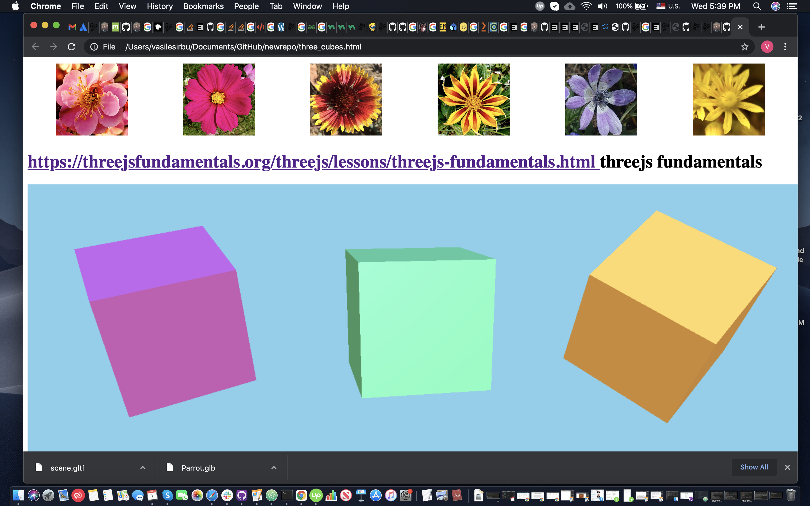

<!DOCTYPE html>
<html>

<head>
  <title> threejsfundamentals.org - Three.js Loading a .GLTF File </title>

  <meta name="viewport" content="width=device-width, initial-scale=1">
  <meta charset="UTF-8" />

  <!-- the styles for this page in the local file main.css (in the /static/ directory mandatory!!!)-->
  <!-- <link href="/static/css/main.css" rel="stylesheet" type="text/css"> -->
  <!--
  <div>
    <table style="width:100%">
      <tr>
        <th>
          
        </th>
        <th>
          
        </th>
        <th>
          
        </th>
        <th>
          
        </th>
        <th>
          

        </th>
        <th>
          
        </th>
        <th>
          
        </th>
        <th>
          
        </th>
        <th>
          
        </th>
      </tr>
    </table>
  </div>
  -->
  <!-- the main.js module of our 3d application for this page (in the /static/ directory mandatory!!!)-->
  <script type="module" crossOrigin = "Anonymous" >

  import * as THREE from 'https://threejsfundamentals.org/threejs/resources/threejs/r125/build/three.module.js';
import {OrbitControls} from 'https://threejsfundamentals.org/threejs/resources/threejs/r125/examples/jsm/controls/OrbitControls.js';
import {GLTFLoader} from 'https://threejsfundamentals.org/threejs/resources/threejs/r125/examples/jsm/loaders/GLTFLoader.js';

function main() {
  //const canvas = document.querySelector('#myCanvas');
  //const renderer = new THREE.WebGLRenderer({canvas});
  const canvas = document.querySelector('#myCanvas');
  const renderer = new THREE.WebGLRenderer({canvas},{ antialias: true });
  renderer.physicallyCorrectLights = true;
  renderer.setSize(window.innerWidth, window.innerWidth * 0.5); //size: width=100%, height=50% of width

  const fov = 45;
  const aspect = 2;  // the canvas default
  const near = 0.1;
  const far = 500;
  const camera = new THREE.PerspectiveCamera(fov, aspect, near, far);
  camera.position.set(0, 0, 25);

  const controls = new OrbitControls(camera, canvas);
  controls.target.set(0, 0, 0);
  controls.update();

  const scene = new THREE.Scene();
  scene.background = new THREE.Color('skyblue'); //scene color

  // put the birds on a pole (parent it to an object)
  // so we can spin the pole to move the birds around the scene
  const birdsPole = new THREE.Object3D();
  scene.add(birdsPole);

/*
  {
    const planeSize = 40;

    const loader = new THREE.TextureLoader();
    const texture = loader.load('https://threejsfundamentals.org/threejs/resources/images/checker.png');
    texture.wrapS = THREE.RepeatWrapping;
    texture.wrapT = THREE.RepeatWrapping;
    texture.magFilter = THREE.NearestFilter;
    const repeats = planeSize / 2;
    texture.repeat.set(repeats, repeats);

    const planeGeo = new THREE.PlaneGeometry(planeSize, planeSize);
    const planeMat = new THREE.MeshPhongMaterial({
      map: texture,
      side: THREE.DoubleSide,
    });
    const mesh = new THREE.Mesh(planeGeo, planeMat);
    mesh.rotation.x = Math.PI * -.5;
    scene.add(mesh);
  }
*/
  {
    const skyColor = 0xB1E1FF;  // light blue
    const groundColor = 0xB97A20;  // brownish orange
    const intensity = 3;
    const light = new THREE.HemisphereLight(skyColor, groundColor, intensity);
    scene.add(light);
  }

  {
    const color = 0xFFFFFF;
    const intensity = 2;
    const light = new THREE.DirectionalLight(color, intensity);
    light.position.set(5, 10, 2);
    scene.add(light);
    scene.add(light.target);
  }
/*
  function frameArea(sizeToFitOnScreen, boxSize, boxCenter, camera) {
    const halfSizeToFitOnScreen = sizeToFitOnScreen * 0.5;
    const halfFovY = THREE.MathUtils.degToRad(camera.fov * .5);
    const distance = halfSizeToFitOnScreen / Math.tan(halfFovY);
    // compute a unit vector that points in the direction the camera is now
    // in the xz plane from the center of the box
    const direction = (new THREE.Vector3())
        .subVectors(camera.position, boxCenter)
        .multiply(new THREE.Vector3(1, 0, 1))
        .normalize();

    // move the camera to a position distance units way from the center
    // in whatever direction the camera was from the center already
    camera.position.copy(direction.multiplyScalar(distance).add(boxCenter));

    // pick some near and far values for the frustum that
    // will contain the box.
    camera.near = boxSize / 100;
    camera.far = boxSize * 100;

    camera.updateProjectionMatrix();

    // point the camera to look at the center of the box
    camera.lookAt(boxCenter.x, boxCenter.y, boxCenter.z);
  }
  */
/*
  let curve;
  let curveObject;
  {
    const controlPoints = [
      [1.118281, 5.115846, -3.681386],
      [3.948875, 5.115846, -3.641834],
      [3.960072, 5.115846, -0.240352],
      [3.985447, 5.115846, 4.585005],
      [-3.793631, 5.115846, 4.585006],
      [-3.826839, 5.115846, -14.736200],
      [-14.542292, 5.115846, -14.765865],
      [-14.520929, 5.115846, -3.627002],
      [-5.452815, 5.115846, -3.634418],
      [-5.467251, 5.115846, 4.549161],
      [-13.266233, 5.115846, 4.567083],
      [-13.250067, 5.115846, -13.499271],
      [4.081842, 5.115846, -13.435463],
      [4.125436, 5.115846, -5.334928],
      [-14.521364, 5.115846, -5.239871],
      [-14.510466, 5.115846, 5.486727],
      [5.745666, 5.115846, 5.510492],
      [5.787942, 5.115846, -14.728308],
      [-5.423720, 5.115846, -14.761919],
      [-5.373599, 5.115846, -3.704133],
      [1.004861, 5.115846, -3.641834],
    ];
    const p0 = new THREE.Vector3();
    const p1 = new THREE.Vector3();
    curve = new THREE.CatmullRomCurve3(
      controlPoints.map((p, ndx) => {
        p0.set(...p);
        p1.set(...controlPoints[(ndx + 1) % controlPoints.length]);
        return [
          (new THREE.Vector3()).copy(p0),
          (new THREE.Vector3()).lerpVectors(p0, p1, 0.1),
          (new THREE.Vector3()).lerpVectors(p0, p1, 0.9),
        ];
      }).flat(),
      true,
    );
    {
      const points = curve.getPoints(250);
      const geometry = new THREE.BufferGeometry().setFromPoints(points);
      const material = new THREE.LineBasicMaterial({color: 0xff0000});
      curveObject = new THREE.Line(geometry, material);
      curveObject.scale.set(100, 100, 100);
      curveObject.position.y = -621;
      curveObject.visible = false;
      material.depthTest = false;
      curveObject.renderOrder = 1;
      scene.add(curveObject);
    }
  }
*/
  //const cars = [];
  /*
  {
    const gltfLoader = new GLTFLoader();
    gltfLoader.load('https://threejsfundamentals.org/threejs/resources/models/cartoon_lowpoly_small_city_free_pack/scene.gltf', (gltf) => {
      const root = gltf.scene;
      scene.add(root);

      const loadedCars = root.getObjectByName('Cars');
      const fixes = [
        { prefix: 'Car_08', y: 0,  rot: [Math.PI * .5, 0, Math.PI * .5], },
        { prefix: 'CAR_03', y: 33, rot: [0, Math.PI, 0], },
        { prefix: 'Car_04', y: 40, rot: [0, Math.PI, 0], },
      ];

      root.updateMatrixWorld();
      for (const car of loadedCars.children.slice()) {
        const fix = fixes.find(fix => car.name.startsWith(fix.prefix));
        const obj = new THREE.Object3D();
        car.position.set(0, fix.y, 0);
        car.rotation.set(...fix.rot);
        obj.add(car);
        scene.add(obj);
        cars.push(obj);
      }

      // compute the box that contains all the stuff
      // from root and below
      const box = new THREE.Box3().setFromObject(root);

      const boxSize = box.getSize(new THREE.Vector3()).length();
      const boxCenter = box.getCenter(new THREE.Vector3());

      // set the camera to frame the box
      frameArea(boxSize * 0.5, boxSize, boxCenter, camera);

      // update the Trackball controls to handle the new size
      controls.maxDistance = boxSize * 10;
      controls.target.copy(boxCenter);
      controls.update();
    });
  }
*/
const birds=[]; //bird models to update in in rendered

function setupModel(data) {
  const model = data.scene.children[0];
  const clip = data.animations[0]; //extract the animation clip for wings
  const mixer = new THREE.AnimationMixer(model); //create the animation mixer
  const action = mixer.clipAction(clip);// c
  action.play();
  model.tick = (delta) => mixer.update(delta);
  birds.push(model);
  birdsPole.add(model);

  model.scale.set(0.05, 0.05, 0.05);
  return model;
}

async function loadBirds() {//this function is async because it waits for promise execution
  const loader = new GLTFLoader();

  const [parrotData, flamingoData, storkData] = await Promise.all([
    loader.loadAsync('https://raw.githubusercontent.com/vasilesirbu1957/newrepo/main/Parrot.glb'),
    loader.loadAsync('https://raw.githubusercontent.com/vasilesirbu1957/newrepo/main/Flamingo.glb'),
    loader.loadAsync('https://raw.githubusercontent.com/vasilesirbu1957/newrepo/main/Stork.glb'),
  ]);

  console.log('Squaaawk!', parrotData);

  const parrot = setupModel(parrotData);
  const flamingo = setupModel(flamingoData);
  const stork = setupModel(storkData);

  parrot.position.set(0, 0, 2.5);
  flamingo.position.set(7.5, 0, -4.5);
  stork.position.set(0, -2.5, -12);

  // move the target to the center of the front bird
  controls.target.copy(parrot.position);

  //scene.add(parrot, flamingo, stork);

  console.log('stork=',stork);

  return {
    parrot,
    flamingo,
    stork,
  };
}

async function init() {//this function is async because it waits for loadBirds() execution
  const { parrot, flamingo, stork } =  await loadBirds();

  return {
    parrot,
    flamingo,
    stork,
  };
}

const { parrot, flamingo, stork } = init();

/*
  {
    const gltfLoader = new GLTFLoader();
    const url = 'https://raw.githubusercontent.com/vasilesirbu1957/newrepo/main/Flamingo.glb';
    gltfLoader.load(url, (gltf) => {
      const root = gltf.scene;
      scene.add(root);
    });
  }
*/
  function resizeRendererToDisplaySize(renderer) {
    const canvas = renderer.domElement;
    const width = window.innerWidth; //canvas.clientWidth;
    const height = window.innerWidth * 0.5; //canvas.clientHeight;

    //const width = canvas.clientWidth;
    //const height = canvas.clientHeight;
    const needResize = canvas.width !== width || canvas.height !== height;
    if (needResize) {
      renderer.setSize(width, height, true); //true - to automatically resize when browser resize its window
    }
    return needResize;
  }

  // create 2 Vector3s we can use for path calculations
  const carPosition = new THREE.Vector3();
  const carTarget = new THREE.Vector3();

  const clock = new THREE.Clock();

  function render(time) {

    if (resizeRendererToDisplaySize(renderer)) {
      const canvas = renderer.domElement;
      camera.aspect = canvas.clientWidth / canvas.clientHeight;
      camera.updateProjectionMatrix();
    }

    const delta = clock.getDelta(); // only call the getDelta function once per frame!

    birds.forEach((bird, ndx) => {
      bird.tick(delta);
    });


    time *= 0.001;  // convert to seconds
    birdsPole.rotation.y = -time * 0.05; //rotate cameraPole


/*
    {
      const pathTime = time * .01;
      const targetOffset = 0.01;
      cars.forEach((car, ndx) => {
        // a number between 0 and 1 to evenly space the cars
        const u = pathTime + ndx / cars.length;

        // get the first point
        curve.getPointAt(u % 1, carPosition);
        carPosition.applyMatrix4(curveObject.matrixWorld);

        // get a second point slightly further down the curve
        curve.getPointAt((u + targetOffset) % 1, carTarget);
        carTarget.applyMatrix4(curveObject.matrixWorld);

        // put the car at the first point (temporarily)
        car.position.copy(carPosition);
        // point the car the second point
        car.lookAt(carTarget);

        // put the car between the 2 points
        car.position.lerpVectors(carPosition, carTarget, 0.5);
      });
    }
*/
/*
    for (const object of updatables) {
      object.tick(time);
    }
*/

    renderer.render(scene, camera);

    requestAnimationFrame(render);
  }

  requestAnimationFrame(render);
}

main();

  </script>

</head>

<body>
<!--
  <h1> <a href="https://threejsfundamentals.org/threejs/lessons/threejs-load-gltf.html"> https://threejsfundamentals.org/threejs/lessons/threejs-load-gltf.html </a> Loading a gltf model </h1>
-->
  <canvas id="myCanvas">  </canvas>


</body>

</html>
